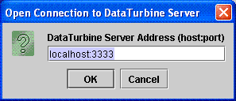
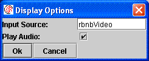
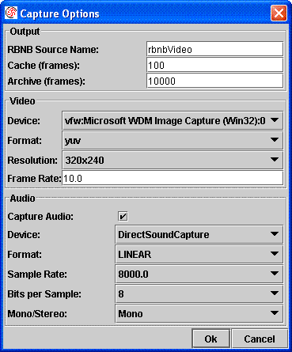

Connect dialog used to connect to a DataTurbine.

View dialog used to request the display of audio-video data from a given source in the DataTurbine.
Operation Controls
The top part of the rbnbAVCP window contains a variety of operation controls. Refer to the example rbnbAVCP screen above for reference.Playback Buttons
When viewing audio and video data from a DataTurbine, a series of tapedeck-like controls along the top of the rbnbAVCP window allow the user to control the data being viewed.| Go to beginning (oldest) of data. | |
 |
Play continuously backwards. |
 |
Single-step one interval backwards. |
| Pause (stop) playback. | |
| Single-step one interval forwards. | |
| Play continuously forwards. | |
| Go to end (newest) of data. | |
| Real-time (continuous) update. |
Position Slider
The slider bar just below the tapedeck-like position controls is an alternate way to set the data position (time). Pull it left or right until the desired time-stamp is displayed above the video image.Capture Parameters
The parameters used by rbnbAVCP
to capture audio and video data are specified in the "Capture Options"
dialog box, acessed from the "Capture..."
menu item under the File menu. A sample dialog is shown below.
Capture dialog to specify parameters for capturing audio and video data.